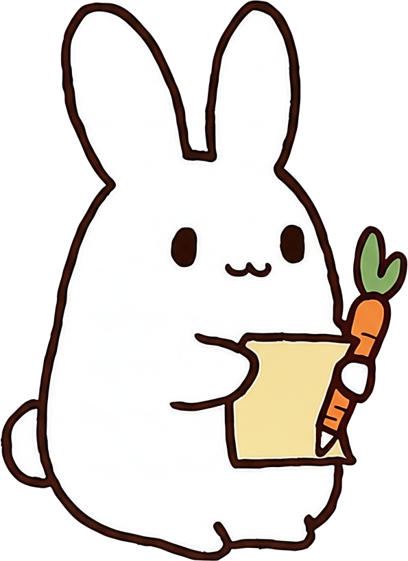
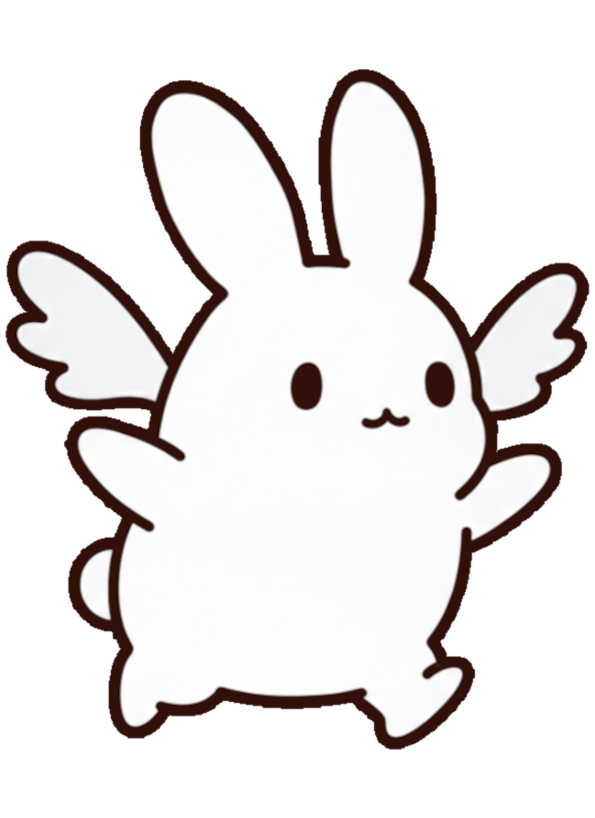

思いついたら、すぐメモ
毎日のメモに必要な操作をシンプルに。買い物リストや短い日記も、気軽に残せます。


For Tiny Notes
たくさん整理しようとしなくて大丈夫。短い一言、買うもの、今日の気づき。メモうさぎは「書くまでの迷い」を減らして、毎日の小さな記録をやさしく受け止めます。

Features
毎日のメモに必要な操作をシンプルに。買い物リストや短い日記も、気軽に残せます。
メモごとに色を変えられるので、内容や気分に合わせてやさしく見分けられます。
開くたびに少しなごむ、手描きのうさぎモチーフ。続けたくなる雰囲気を大切にしています。
入力した内容が外部に送信されることはありません。日常の控えを安心して残せます。
Screens
一覧、設定、編集画面まで、淡い色づかいと見やすい余白で統一。日常のメモを開く時間が、少しだけ楽しくなります。


How to Use
書きたいことが浮かんだら、
まずアプリを開きます。
短い一言でも、箇条書きでも。
今の内容をそのまま残せます。
あとから読み返して、
やることや気づきを整理。
FAQ
買い物リスト、短い日記、アイデア、予定の控えなど、日常の小さなメモに向いています。
複雑な機能を増やすよりも、気軽に開いて書けるシンプルな使い心地を大切にしています。
入力した内容が外部に送信されることはありません。安心して、あなただけのメモを残せます。

Download
日常のメモを、やさしく、気軽に。 思いついたことをメモうさぎに残してみませんか。